Indulge in the vibrant flavors of authentic Korean barbecue right in the heart of Cape Town.
Get In TouchKimchi BBQ restaurant & Bar Green Point is your go-to place for authentic Korean barbecue in Cape Town. Situated at the picturesque Old Cape Quarter, we serve both locals and tourists, offering a delightful escape into the world of Korean cuisine.
Our journey began with a passion for sharing the rich flavors and traditions of Korean barbecue with the community. We pride ourselves on using the finest ingredients and traditional cooking techniques to deliver an unforgettable dining experience.
At Kimchi BBQ, we value hospitality, quality, and authenticity. Our dedicated team is committed to providing you with warm, personalized service and a taste of Korea that keeps you coming back for more.
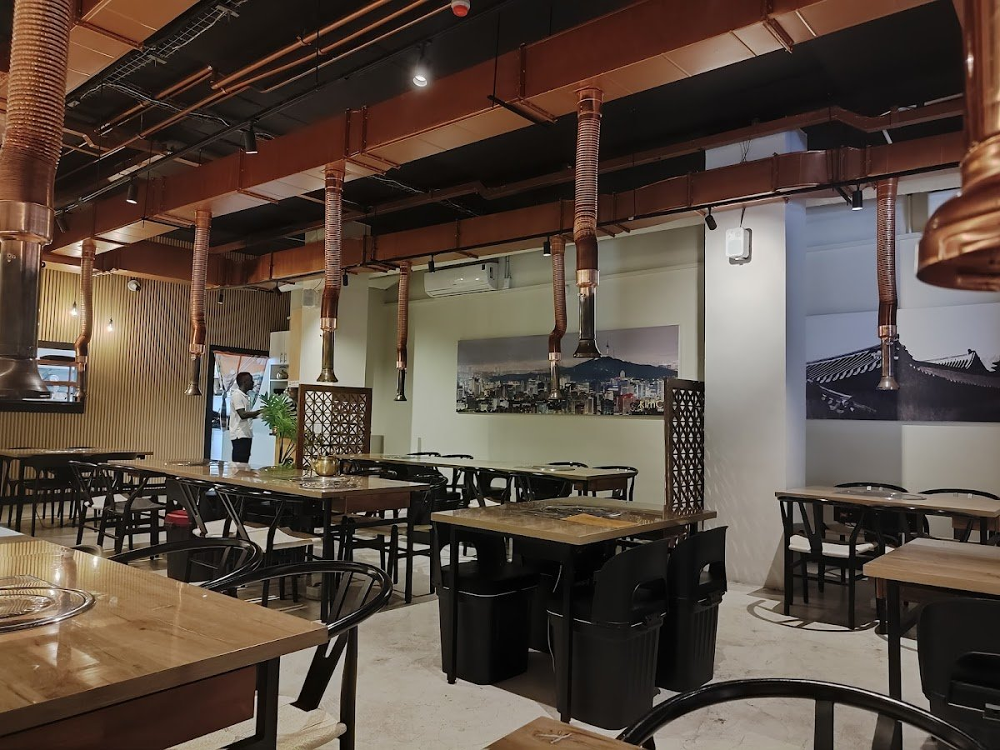
Discover the diverse offerings at Kimchi BBQ, where each dish is crafted to perfection, ensuring a memorable dining experience.
Enjoy an interactive dining experience with our table grills, allowing you to cook premium cuts of beef and pork to your liking.
Savor the taste of the ocean with our selection of fresh fish and seafood, carefully prepared to highlight their natural flavors.
Discover why our guests can't stop raving about their unforgettable experiences at Kimchi BBQ Restaurant & Bar in Green Point!
"What an experience! Beautiful restaurant, hidden in the Old Quarter in the best way possible. Food was great and service excellent. Definitely on the pricey side, but it forms part of the experience of it all. Would definitely suggest they add rice as one of the sides, quite enjoyed that and maybe some soy sauce on the table. Will definitely return, worth the visit!"— René Basson, ★★★★★
"Kimchi is THE BEST Korean restaurant in Cape Town and their new location in De Waterkant is absolutely incredible. It’s modern, clean and bigger which means more patrons can enjoy a table! They have the best tteokbokki and crispy chicken. I recently tried some new menu items and the Osam Set is to-die-for. I also love how the quality is the same when you order on Uber Eats. 10/10 !!"— Emma Carrington, ★★★★★
"It’s been long time I’ve been looking for a proper authentic Korean restaurant, and I’ve tried a few around South Africa. This place by far surpassed my expectations. Then you renovated area, friendly staff, willing to go an extra mile, good location, and that all is besides the great food. Special note goes to their extractors, which are so good that there is literally no smoke coming from the food, it sucks it all! It was a great experience and I will definitely be back, over and over again."— Irina, ★★★★★
"Modern restaurant, cozy but with a bit of a snack bar atmosphere. Friendly staff serve you quickly and professionally. All tables have a built-in grill with its own exhaust fan. Delicious grilled dishes that can be prepared to your liking. Thanks to the perfect technology, there is no unpleasant smell and your clothes won't smell of grease or smoke afterwards. The other dishes were also very tasty."— Tom, ★★★★★
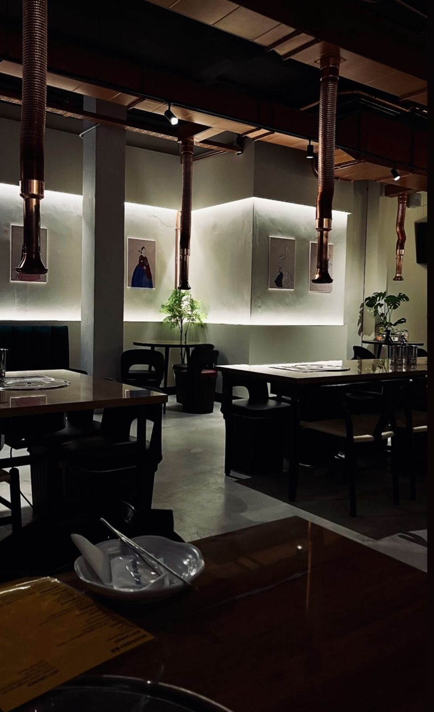
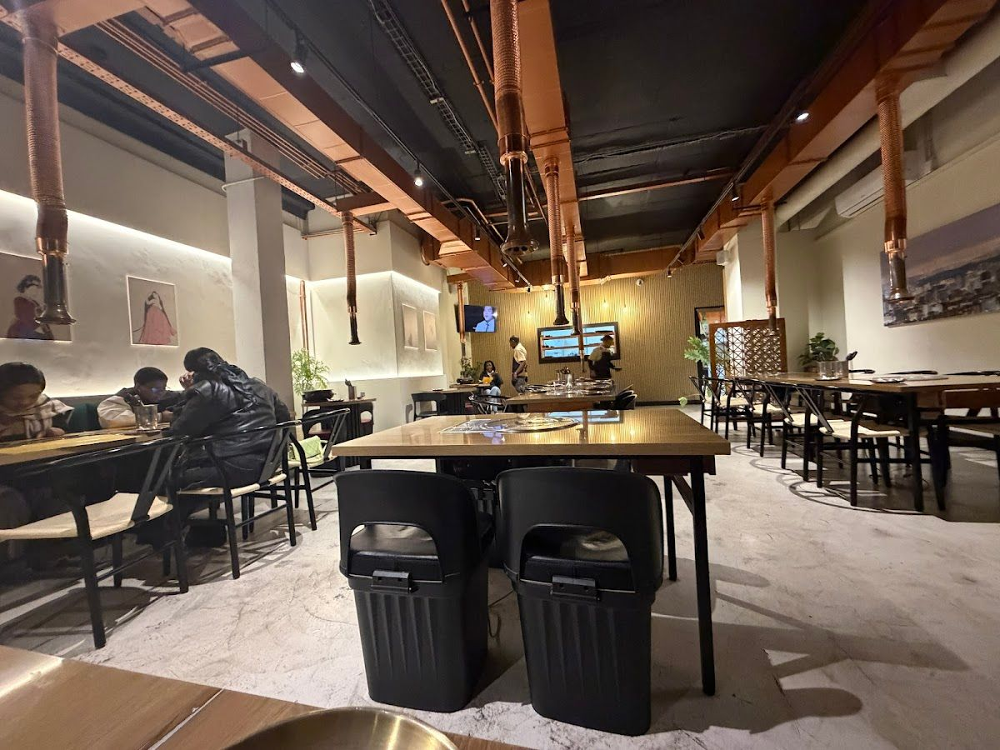
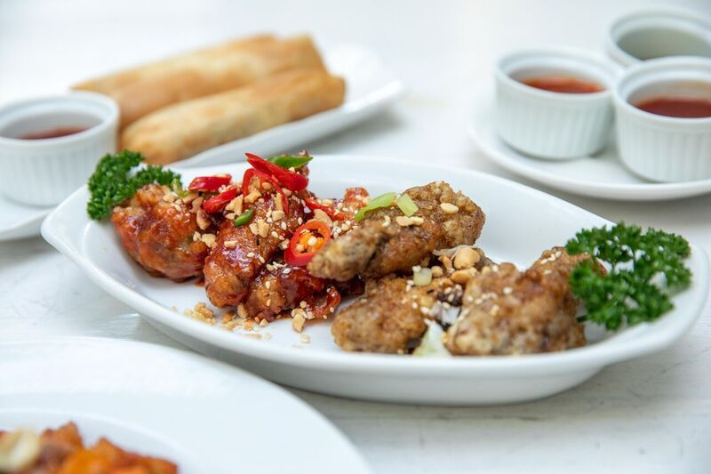
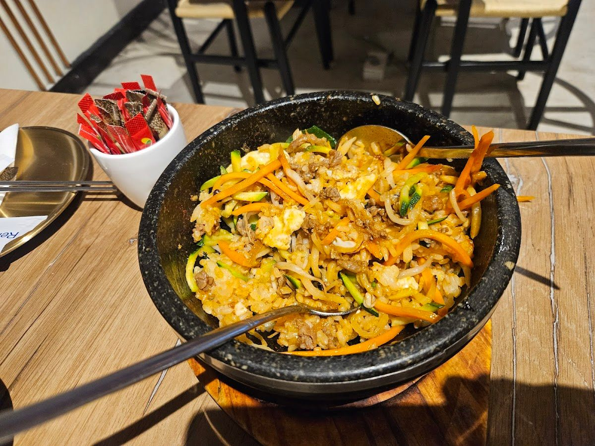
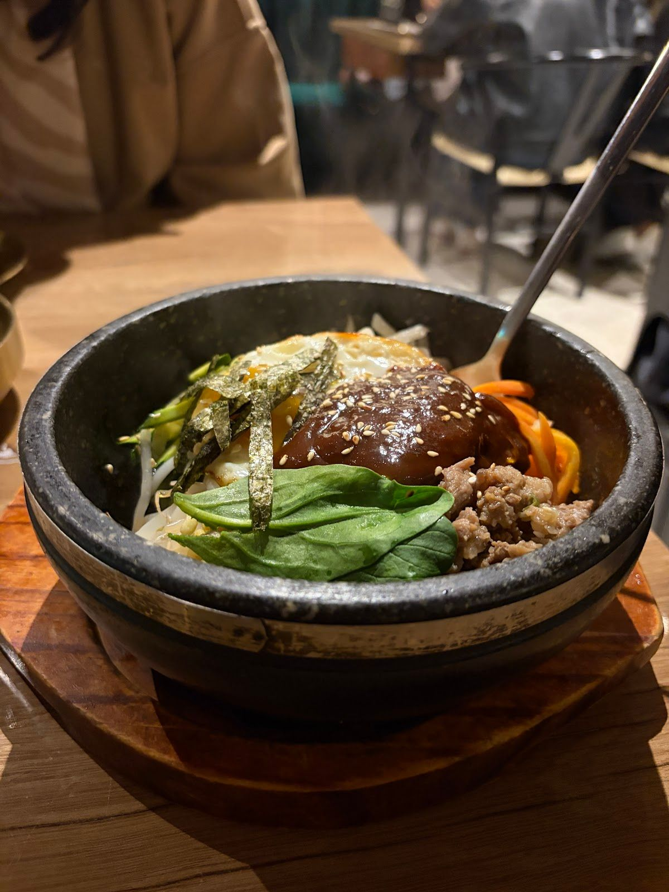
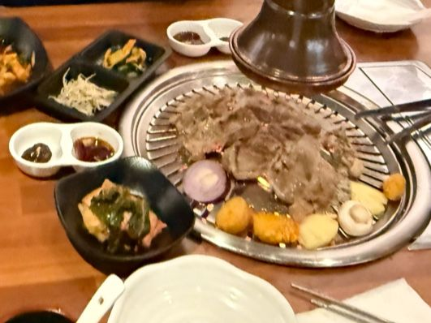
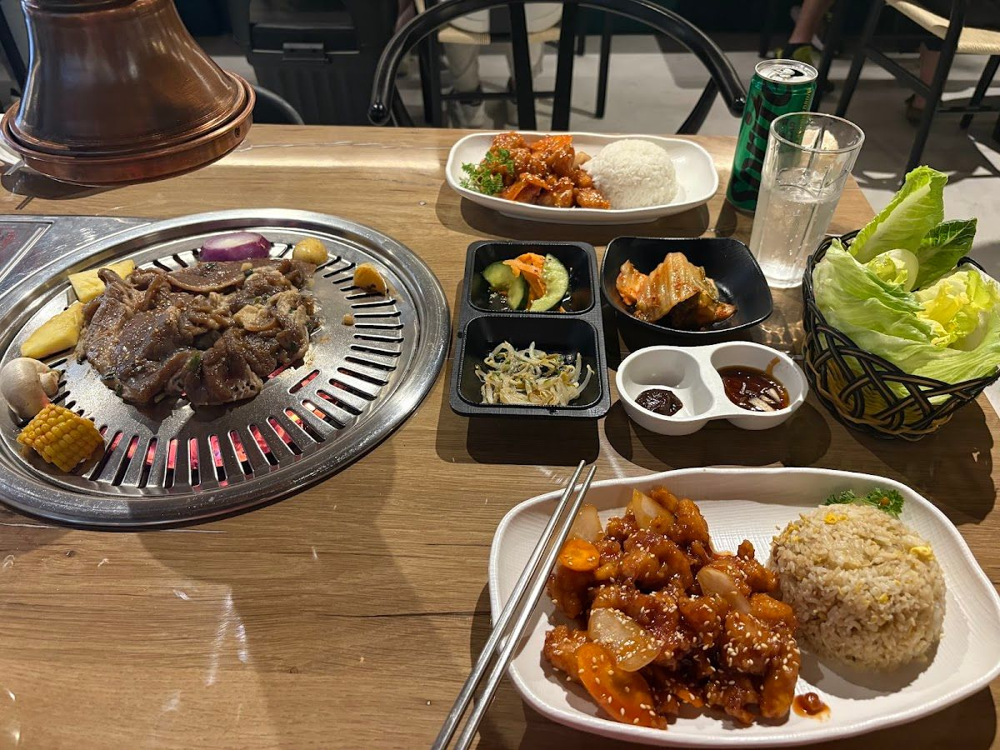
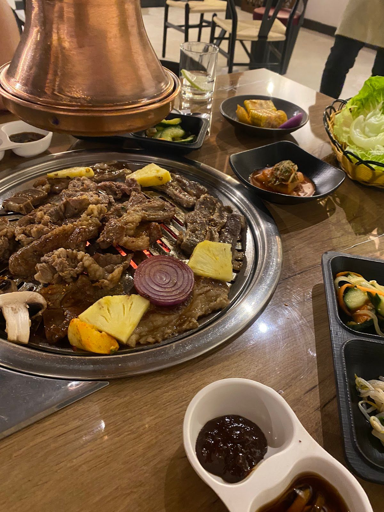
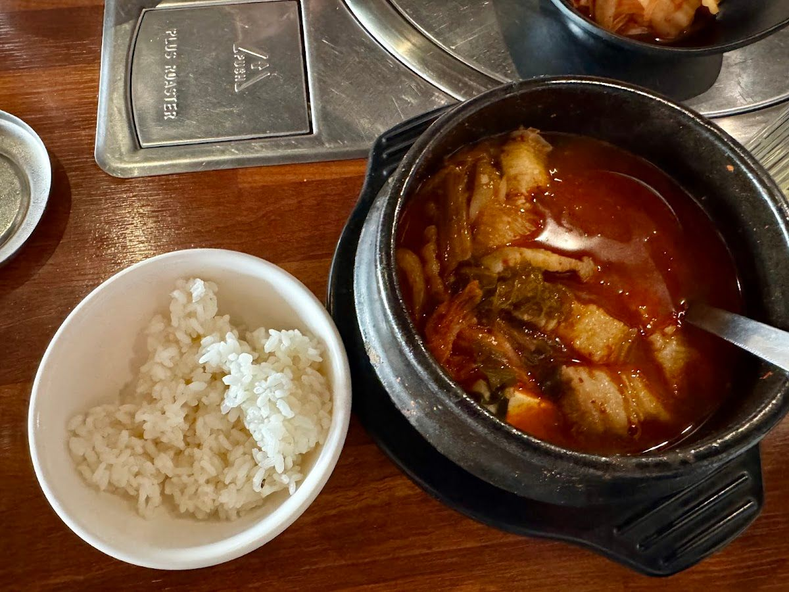
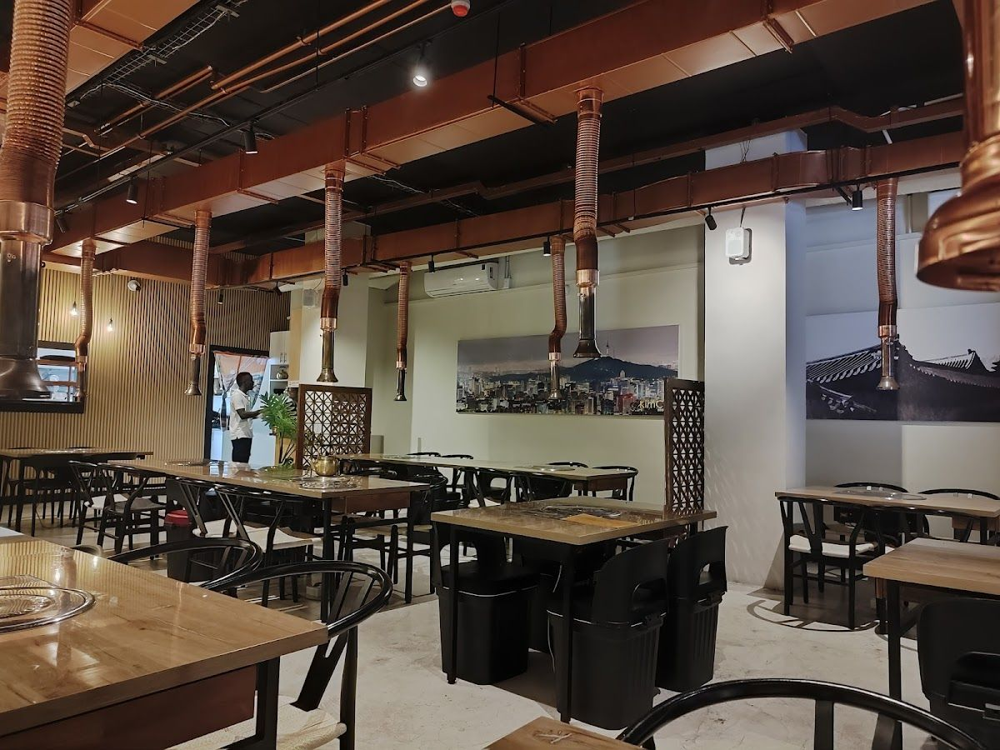